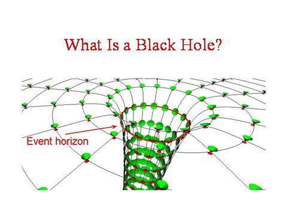

 Laplace (1795) noted that a consequence of Newtonian gravity and Newton's corpuscular theory of light was that light could not escape from an object of sufficiently large mass and small radius.
Einstien (1915) published his theory of general relativity. Schwarzschild (1916) derived a general relativistic solution for the gravitational field surrounding a spherical mass: Schwarzschild black holes.
Wheeler (1968) studies the problem of gravitational collapse - coins the term black hole.
 Two types of black hole believed to have been observed:
Two types of black hole believed to have been observed:
*The remnants of dead stars, with fairly small mass
*Supermassive black holes
Very small black holes could exist:
*In the early universe
*In space-time foam

 Study X-ray binary systems. These systems consist of a visible star in close orbit around an invisible companion star which may be a neutron star or black hole. The companion star pulls gas away from the visible star.
Study X-ray binary systems. These systems consist of a visible star in close orbit around an invisible companion star which may be a neutron star or black hole. The companion star pulls gas away from the visible star.
Gravitational wave from black hole Perturbations around the black hole can tell us unique sound of the black hole